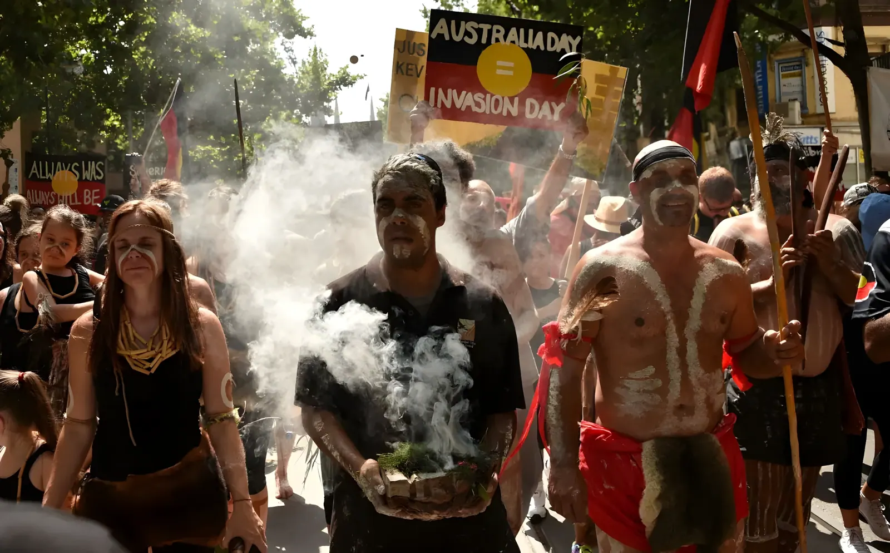

En l'espace de trois mois, deux décisions de justice inédites ont redéfini les contours du droit au titre natif en Australie. Le 27 février 2026, les peuples Gudanji, Yanyuwa et Yanyuwa-Marra ont obtenu plus de 54 millions de dollars. Le 12 mai 2026, les Yindjibarndi ont décroché 150,1 millions de dollars contre le géant minier Fortescue — le plus grand dédommagement de l'histoire du titre natif australien. Derrière les records se lisent deux décennies de combat, des sites sacrés détruits, et une question qui divise : la justice a-t-elle un prix à la hauteur du préjudice ?
Depuis 2013, le Solomon Hub de Fortescue Metals Group (FMG), fondé par le milliardaire Andrew Forrest, extrait du minerai de fer en quantité industrielle dans le Pilbara, en Australie-Occidentale — l'une des régions minières les plus riches du monde. Problème : ces terres appartiennent traditionnellement au peuple Yindjibarndi. En 2017, un tribunal fédéral a reconnu les droits exclusifs de titre natif des Yindjibarndi sur la zone de revendication. Malgré cette reconnaissance, Fortescue ne leur avait versé jusqu'à la décision du 12 mai 2026 pas un centime de compensation.
Les quatre grandes mines à ciel ouvert du Solomon Hub ont généré des dizaines de milliards de dollars de revenus depuis le début de la production, et ce sans l'accord des propriétaires traditionnels. FMG avait obtenu les autorisations gouvernementales requises, mais en passant par un groupe représentatif concurrent, la Wirlu-Murra Yindjibarndi Aboriginal Corporation — soutenu par Andrew Forrest — et non par le Yindjibarndi Ngurra Aboriginal Corporation (YNAC), le représentant légitime des ayants droit.
La Cour fédérale de Perth a rendu son jugement le 12 mai 2026 sous la plume du juge Stephen Burley. Ce dernier a reconnu que Fortescue avait causé des dommages significatifs aux lignes de chant (song lines) et aux sites patrimoniaux des Yindjibarndi. Il a accordé 150 millions de dollars au titre de la perte culturelle et 100 000 dollars au titre de la perte économique — soit 150,1 millions au total. Ce montant est près de trois fois supérieur au précédent record de la Cour fédérale australienne, établi quelques semaines plus tôt par la décision Gudanji-Yanyuwa.
Le tribunal a retenu que plus de 135 km² de terres avaient été clôturés et rendus inaccessibles au peuple Yindjibarndi, en raison de la dangerosité du site minier. Infrastructures de transport, voie ferrée, digue de stériles, décharges et zones de stockage ont irréversiblement transformé un territoire chargé de sens spirituel, culturel et identitaire.
« Ils creusent notre sol pour rien, et nous ne reçoivent rien en retour. »
— Judith Coppin, ancienne Yindjibarndi, à la sortie du tribunal, 12 mai 2026« On n'arrive pas si loin pour s'arrêter… nous sommes des combattants, nous avons combattu toute notre vie. »
— Michael Woodley, directeur exécutif du YNAC, 12 mai 2026Quelques mois avant la décision Yindjibarndi, c'est dans le Territoire du Nord qu'une première décision majeure avait été rendue. Le 27 février 2026, la Cour fédérale a condamné le gouvernement du Territoire du Nord à verser plus de 54,7 millions de dollars aux peuples Gudanji, Yanyuwa et Yanyuwa-Marra au titre des pertes économiques, culturelles et spirituelles liées à la mine McArthur River, exploitée par le groupe Glencore près de Borroloola.
La juge Katrina Banks-Smith a accordé 54 millions pour pertes culturelles et spirituelles, et 743 408 dollars pour pertes économiques (intérêts compris). Il s'agissait seulement de la deuxième fois dans l'histoire australienne qu'un tribunal supérieur quantifiait une indemnisation au titre natif — la première ayant eu lieu lors de l'affaire Timber Creek en 2019. La décision a aussi tenu compte d'un accord de gestion du patrimoine culturel (ILUA) conclu avec Glencore en décembre 2025, qui a légèrement réduit la compensation culturelle initiale de 60 à 54 millions, sans pour autant valider rétrospectivement les agissements de la mine.
Les Yindjibarndi entament des négociations avec Fortescue pour un accord de protection des sites culturels. Aucun accord n'aboutit.
Fortescue commence l'extraction au Solomon Hub sans accord avec le YNAC, représentant légitime des Yindjibarndi.
La Cour fédérale reconnaît les droits exclusifs de titre natif des Yindjibarndi sur la zone de revendication. Fortescue ne versera toujours rien.
Première grande décision : 54,7 M$ accordés aux Gudanji, Yanyuwa et Yanyuwa-Marra pour la mine McArthur River. Deuxième quantification de titre natif en histoire australienne.
La Haute Cour (Commonwealth v Yunupingu) étend la compensation aux actes gouvernementaux antérieurs à 1975, ouvrant une ère de nouvelles réclamations.
Record absolu : 150,1 M$ accordés aux Yindjibarndi contre Fortescue. Malgré tout, les anciens parlent de « cacahuètes » face aux milliards engrangés par FMG.
| Affaire | Date | Accordé | Demandé |
|---|---|---|---|
| Timber Creek | 2019 | A$2,5 M | — |
| McArthur River (Gudanji…) | Fév. 2026 | A$54,7 M | non précisé |
| Solomon Hub (Yindjibarndi) | Mai 2026 | A$150,1 M | A$1,8 Md |
Les décisions de 2026 représentent une avancée juridique sans précédent pour les peuples autochtones d'Australie. Pourtant, l'écart entre les montants accordés et ceux réclamés illustre une tension fondamentale : celle entre une logique juridique qui quantifie la perte culturelle en termes monétaires et une réalité vécue où la destruction du ngurra — le Pays, au sens spirituel et identitaire — ne saurait se réduire à aucun chiffre. Le National Native Title Council a qualifié ces décisions de « sommet de l'iceberg » face à l'ampleur des créances non réglées. La dynamique est cependant irréversible : la Haute Cour, les juridictions fédérales et un cadre législatif renforcé convergent pour faire de la compensation du titre natif un enjeu central de la relation entre l'État australien, ses industries extractives et ses premiers peuples.
Within the space of three months, two landmark court rulings reshaped the boundaries of native title law in Australia. On 27 February 2026, the Gudanji, Yanyuwa and Yanyuwa-Marra peoples were awarded over A$54 million. Then on 12 May 2026, the Yindjibarndi people secured A$150.1 million against mining giant Fortescue — the largest native title compensation payout in Australian history. Behind the records lie two decades of legal struggle, destroyed sacred sites, and one dividing question: can justice truly be priced?
Since 2013, the Solomon Hub belonging to Fortescue Metals Group (FMG), founded by billionaire Andrew Forrest, has been extracting iron ore on an industrial scale from the Pilbara region of Western Australia — one of the world's richest mining territories. The problem: these lands belong traditionally to the Yindjibarndi people. In 2017, a federal tribunal formally recognised the Yindjibarndi's exclusive native title rights over the claim area. Yet despite that recognition, Fortescue paid them nothing until the Federal Court ruling of 12 May 2026.
The four large open-cut mines of Solomon Hub have generated tens of billions in revenue since production began, without the agreement of the traditional owners. FMG obtained the necessary government approvals — but by dealing with a rival representative body, the Wirlu-Murra Yindjibarndi Aboriginal Corporation, backed by Andrew Forrest himself — rather than with YNAC (Yindjibarndi Ngurra Aboriginal Corporation), the legitimate rights-holder.
The Federal Court of Perth handed down its judgment on 12 May 2026, written by Justice Stephen Burley. He found that Fortescue had caused significant damage to the Yindjibarndi's song lines and heritage sites, awarding A$150 million for cultural loss and A$100,000 for economic loss — A$150.1 million in total. The sum is almost three times the previous Federal Court record, itself set just weeks earlier by the Gudanji-Yanyuwa ruling.
The court noted that over 135 km² of land had been fenced off and made inaccessible to the Yindjibarndi people due to the hazardous nature of the mine site. Transport infrastructure, railway lines, tailings dams, waste dumps and stockpile areas have irreversibly transformed a landscape imbued with spiritual, cultural and personal significance.
"They dig our ground up for nothing, give us nothing in return."
— Judith Coppin, Yindjibarndi elder, outside court, 12 May 2026"We don't get this far and stop… we're fighters, we've been fighting all our life."
— Michael Woodley, CEO of YNAC, 12 May 2026Months before the Yindjibarndi decision, a landmark ruling had already been delivered in the Northern Territory. On 27 February 2026, the Federal Court ordered the NT Government to pay over A$54.7 million to the Gudanji, Yanyuwa and Yanyuwa-Marra peoples for economic, cultural and spiritual losses linked to the McArthur River Mine, operated by Glencore near Borroloola.
Justice Katrina Banks-Smith awarded A$54 million for cultural and spiritual loss, and A$743,408 for economic loss (including interest). This was only the second time in Australian history that a superior court had quantified a native title compensation award — the first being the Timber Creek case in 2019. The ruling also took into account an Indigenous Land Use Agreement (ILUA) concluded with Glencore in December 2025, which slightly reduced the initial cultural compensation figure from A$60 million to A$54 million, without retroactively legitimising the mine's activities.
Yindjibarndi leaders begin negotiations with Fortescue for a heritage protection agreement. No deal is reached.
Fortescue begins mining at Solomon Hub without an agreement with YNAC, the legitimate Yindjibarndi representative.
Federal Court recognises Yindjibarndi exclusive native title rights over the claim area. Fortescue still pays nothing.
High Court (Commonwealth v Yunupingu) extends compensation rights to pre-1975 Commonwealth acts, opening a new era of historical claims.
A$54.7 million awarded to Gudanji, Yanyuwa and Yanyuwa-Marra over McArthur River Mine. Only the second native title quantification in Australian legal history.
Record broken: A$150.1 million awarded to the Yindjibarndi against Fortescue. Yet elders describe it as "peanuts" against billions extracted from their Country.
| Case | Date | Awarded | Claimed |
|---|---|---|---|
| Timber Creek | 2019 | A$2.5 M | — |
| McArthur River (Gudanji…) | Feb. 2026 | A$54.7 M | undisclosed |
| Solomon Hub (Yindjibarndi) | May 2026 | A$150.1 M | A$1.8 Bn |
The 2026 rulings mark an unprecedented legal advance for Australia's Indigenous peoples. Yet the gap between amounts awarded and those claimed captures a fundamental tension: legal logic attempts to quantify cultural loss in monetary terms, while lived experience insists that the destruction of ngurra — Country, in its spiritual and identity-forming sense — cannot be reduced to any figure. The National Native Title Council described these decisions as the "tip of the iceberg" in relation to unpaid native title claims. But the momentum is now irreversible: the High Court, federal courts and a strengthened legislative framework are converging to make native title compensation a defining issue in the relationship between the Australian state, its extractive industries, and its First Peoples.